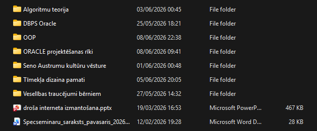
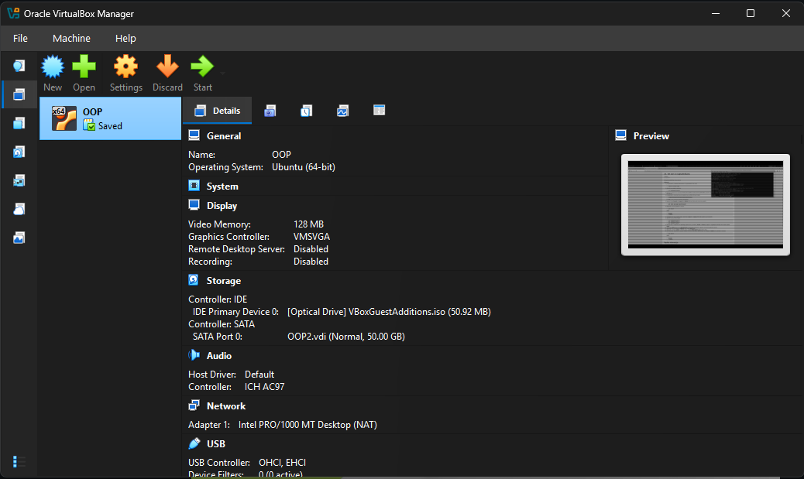
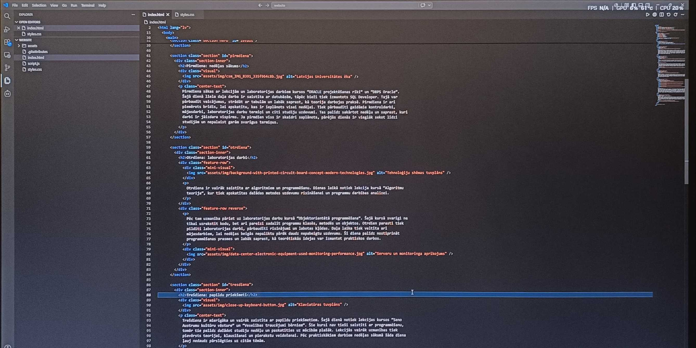
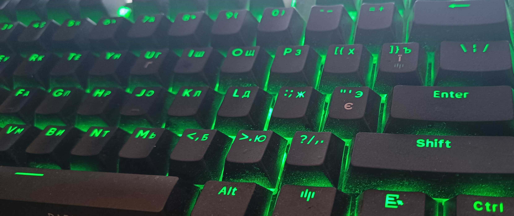
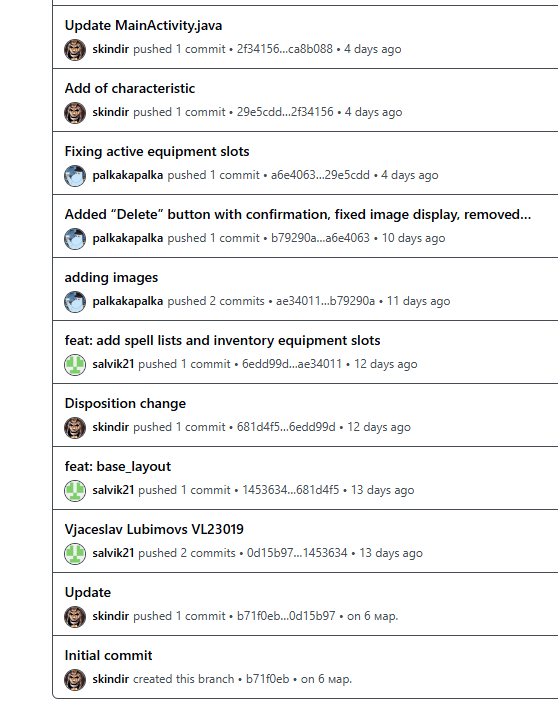
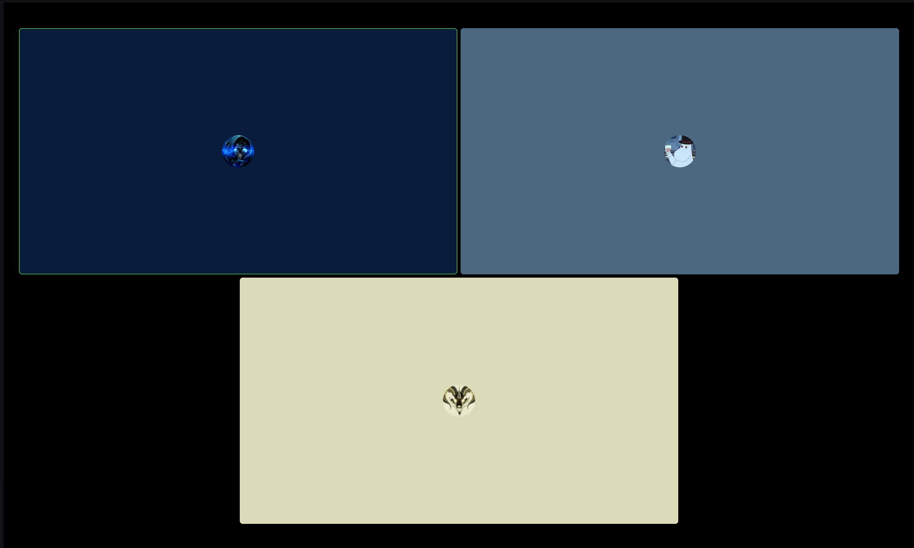
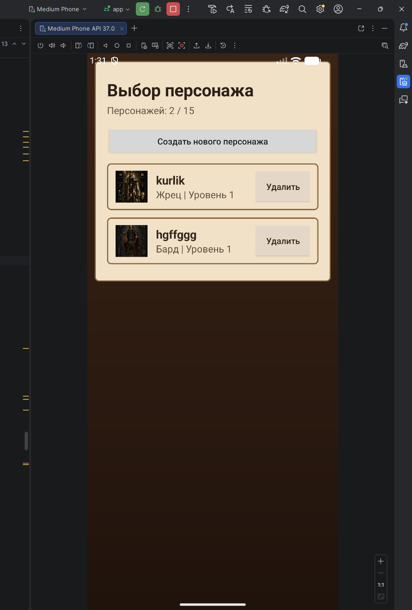
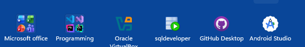

Viena darba nedēļa Datorikas nodaļas studenta dzīvē
Pirmdiena: nedēļas sākums

Pirmdiena sākas ar lekcijām un laboratorijas darbiem kursos “ORACLE projektēšanas rīki” un “DBPS Oracle”. Šajā dienā liela daļa darba ir saistīta ar datubāzēm, tāpēc bieži tiek izmantots SQL Developer. Tajā var pārbaudīt vaicājumus, strādāt ar tabulām un labāk saprast, kā teorija darbojas praksē. Pirmdiena ir arī piemērots brīdis, lai apskatītu, kas ir ieplānots visai nedēļai. Tiek pārbaudīti gaidāmie kontroldarbi, mājasdarbi, laboratorijas darbu termiņi un citi studiju uzdevumi. Tas palīdz sakārtot nedēļu un saprast, kuri darbi ir jāizdara vispirms. Ja pirmdien viss ir skaidri saplānots, pārējās dienās ir vieglāk sekot līdzi studijām un nepalaist garām svarīgus termiņus.
Otrdiena: laboratorijas darbi

Otrdiena ir vairāk saistīta ar algoritmiem un programmēšanu. Dienas laikā notiek lekcija kursā “Algoritmu teorija”, kur tiek apskatītas dažādas metodes uzdevumu risināšanai un programmu darbības analīzei.
Pēc tam uzmanība pāriet uz laboratorijas darbu kursā “Objektorientētā programmēšana”. Šajā kursā svarīgi ne tikai uzrakstīt kodu, bet arī pareizi sadalīt programmu klasēs, metodēs un objektos. Otrdien parasti tiek pildīti laboratorijas darbi, pārbaudīti risinājumi un labotas kļūdas. Daļa laika tiek veltīta arī mājasdarbiem, lai nedēļas beigās nepaliktu pārāk daudz nepabeigtu uzdevumu. Šī diena palīdz nostiprināt programmēšanas prasmes un labāk saprast, kā teorētiskās idejas var izmantot praktiskos darbos.

Trešdiena: papildu priekšmeti

Trešdiena ir mierīgāka un vairāk saistīta ar papildu priekšmetiem. Šajā dienā notiek lekcijas kursos “Seno Austrumu kultūru vēsture” un “Veselības traucējumi bērniem”. Šie kursi nav tieši saistīti ar programmēšanu, tomēr tie palīdz dažādot studiju nedēļu un paskatīties uz mācībām plašāk. Lekcijās vairāk uzmanības tiek pievērsts teorijai, klausīšanai un pierakstu veidošanai. Pēc praktiskākiem darbiem nedēļas sākumā šāda diena ļauj nedaudz pārslēgties uz citām tēmām.
Ceturtdiena: darbs pie grupas projekta



Ceturtdiena notiek attālināti, tāpēc visa diena ir vairāk saistīta ar darbu pie datora. Galvenā nodarbība ir garā lekcija kursā “Objektorientētā programmēšana”, kur tiek apskatītas svarīgas programmēšanas tēmas un piemēri. Šī lekcija prasa uzmanību, jo objektorientētā programmēšana ir cieši saistīta ar laboratorijas darbiem un grupas projektu. Pēc lekcijas laiks tiek veltīts projekta izstrādei. Darbs notiek, izmantojot Discord saziņai, GitHub izmaiņu pārbaudei un Android Studio praktiskai programmēšanai. Grupas projektā svarīgi sekot līdzi tam, ko dara pārējie dalībnieki, lai visas daļas beigās varētu apvienot vienā risinājumā. Ceturtdiena ir diezgan intensīva, jo tajā apvienojas gan lekcija, gan patstāvīgs darbs pie projekta.
Piektdiena: mājas darbi, projekts un atpūta
Piektdiena ir nedēļas noslēgums, kad galvenā uzmanība tiek pievērsta nepabeigtajiem darbiem. Šajā dienā tiek pabeigti mājasdarbi un laboratorijas darbi, kuriem tuvojas nodošanas termiņi. Tas palīdz sakārtot studiju nedēļu un neatstāt svarīgus uzdevumus uz pēdējo brīdi. Daļa laika tiek veltīta arī grupas projektam, jo pie tā regulāri jāstrādā, lai viss virzītos uz priekšu. Piektdien parasti tiek pārbaudīts, kas vēl jāizdara, kas jau ir pabeigts un kādi uzdevumi paliek nākamajai nedēļai. Pēc mācībām un projekta darba ir svarīgi arī atpūsties.
